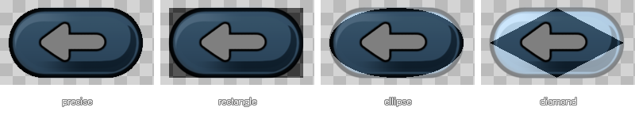

Editing Collision Masks
This section deals with the collision mask editor.
Once you open a sprite resource, you can edit its collision mask, which is the area that GameMaker:Studio uses to calculate when two instances are in collision or not and trigger a collision event. To get
the collision mask editor, open a sprite resource and press the button Modify Mask. The following window will show :

The Mask Properties window is split into various sections (explain in more depth below) and on the right you can see a graphical representation of the sprite with the current mask overlaid in dark grey. All changes that you
make to the mask will be reflected here, making it far easier to visualise how they will affect how your game plays.
Image
This part shows you some basic information about the sprite, including the width and height and the current sub-image. There is a check-box at the bottom where you can switch on and off the visual representation of the
mask in the view on the right, and the zoom controls beneath this can also be used to change the scale of the view to help fine-tune the size of the mask better.
General
This section has two options which you can change, with the first being the separate collision masks toggle which is the same as in the actual sprite resource itself. All this does is tell GameMaker:Studio to create
a separate collision mask for each sub-image of the current sprite (Note that if you set the bounding box manually, a single bounding box will be used for all sub-images, regardless of this setting) but only if you have selected
"precise" from the properties on the right. You can also indicate the tolerance with respect to the transparency of the sprites pixels : with a higher tolerance pixels that are partially transparent are left outside the mask, while
with a lower tolerance the mask will take into account those pixels. This influences both the bounding box (when not set to manual) and the mask for precise collision checking.
Bounding Box
The bounding box is the name given to the rectangular area that the sprite mask fits in. Only pixels inside this bounding box are used for the mask and will be involved in collision checking, and by default this is automatically
computed, taking the alpha tolerance into account. If you have precise checked then this will be separate for each sub-image too. You can also set it to the full image (the actual width and height of the sprite, irrespective of
the transparencies that the sprite may have) or you can set it to manual, where you can specify the bounding box yourself. When setting it yourself, you can input the values in the boxes for left, right top and bottom, or you can
click in the sprite view and drag to "draw" it over the sprite. Note that when "drawing" the bounding box, the mask is automatically generated to fit within the end values.
Shape
Here you can indicate the shape of the mask you wish GameMaker:Studio to base its collisions off of. The default is precise, per-pixel collision checking, but you can select here also to use a rectangular, elliptical, or
diamond shaped mask too, with all of them being faster for GameMaker:Studio to process than precise collisions, but no one of the three being faster than the other. Here you can see how the different shapes are
applied to a sprite :

Choosing A Collision Mask
It is important to carefully decide on the collision mask you use for your sprites. Although precise collision checking might seem the most logical option, in many cases game play is improved by using rectangles or ellipses, or
simple masks that are a bit smaller than the actual sprites themselves. Only on a very few occasions should you need precise masks, and, in general, it is better to have as few instances with precise collisions as possible.
Please note too that if you want even further control over the mask, then you can specify an actual sprite to use as mask within the object properties themselves. In this way you can make the collision mask completely independent
of the sprite image assigned to that object, which can be very useful, for example, when making isometric games and you want to have a only a small collision mask at the feet of the player.
© Copyright YoYo Games Ltd. 2013 All Rights Reserved